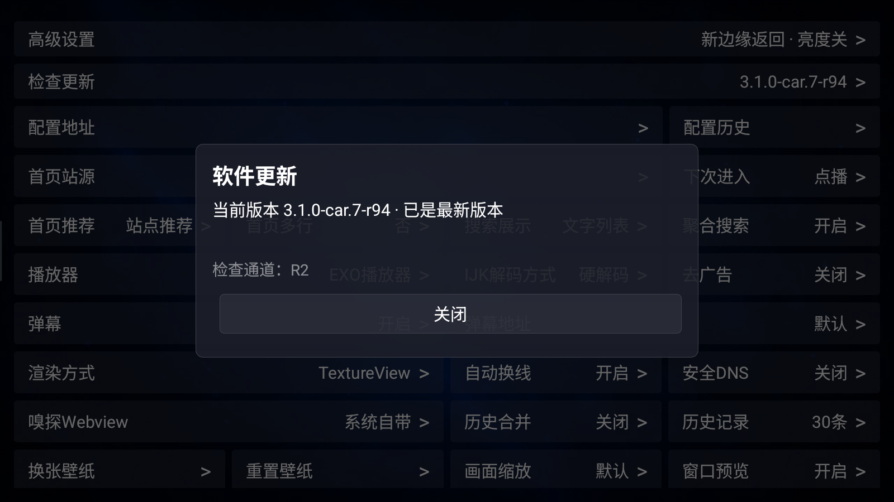

已发布到 R2 与 GitHub（源码 98293be4），整包 SHA、资产摘要与原签名回读一致，CI 通过。
公共网络层按 cdn-url 目录内置加速；无设置项；失效节点运行时停用，TLS 身份异常 6 小时后自动复测；R2、带凭据请求与非 GET 请求不被加速。
APK SHA-256：4243288a632bf03ca1bb7d702a2fa47357b2521d6ad1a7da350c3269410f04e4
| 检查 | 结果 | 证据 |
|---|---|---|
| target_version | True | 3.1.0-car.7-r94 |
| manual_check_clicked | True | native settings view |
| r2_current_version_completes | True | latest-version dialog visible |
| app_stack_github_raw | True | bytes=13 first_line=Hello World! |
| app_stack_release_asset | True | bytes=110 |
App 网络栈实际命中：GitHubCdn: ok node=v4.gh-proxy.org origin=raw.githubusercontent.com http=200；Release 资产：origin=github.com http=200；更新检查仍走 R2（channel=R2）。全文见 device/logcat.txt。
